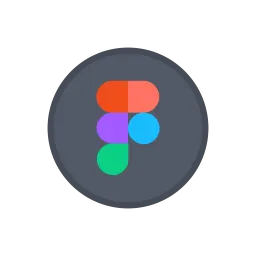
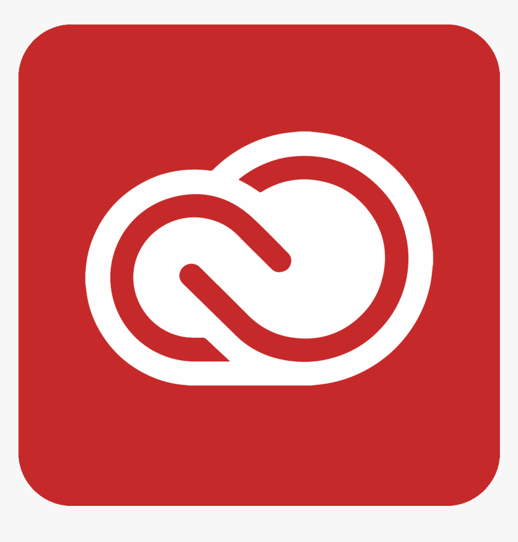

About Me
I'm a UX designer and third-year Interactive Arts and Technology student at SFU, passionate about crafting intuitive digital experiences that blend research, Human-Computer Interaction principles, and visual design.
About Me
I'm a fourth-year Interactive Arts & Technology student specializing in 3D animation, visual storytelling, and digital media production. As a Bachelor of Arts student, I enjoy creating both physical and digital media. My love of animation and graphic novels drives me to make work that is imaginative, tactile, and thoughtful.
Education
Interactive Arts & Technology
SFU · Bachelor of Arts
Coursework spanning 3D animation, UX research, physical computing, data visualization, and visual design. Specializing in 3D animation and digital media production.
Tools

Figma product design
Adobe CC graphic designResume
Download Resume (PDF)Say Hello
I'm currently open to UX/UI design opportunities and would love to connect with companies looking for a creative, research-driven designer. Feel free to email me to discuss how I can contribute to your team.
Contact Me